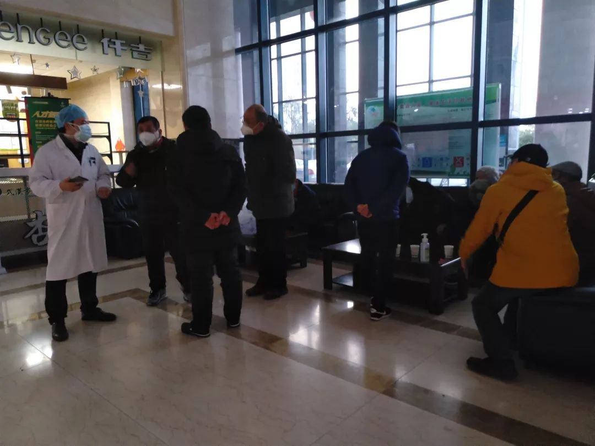
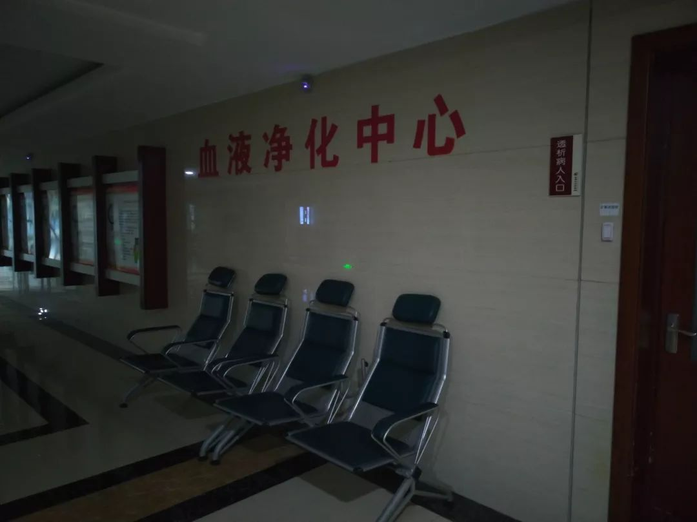
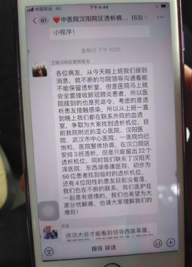

“不透析就是在等死” ，尿毒症患者的封城困境
原文链接 备份链接 每一次维持生命的出行，都充满了未知。 文 | 冯洁、高逸佳、谢婵 编辑 | 小豆 元元已经在汉阳中医院连续站了八个多小时。除了他，1月28日当晚，还有将近20名尿毒症患者聚集在汉阳中医院，他们只戴了口罩，没有别的防护。 …
据该医院肾病科医生王刚介绍，院区共有60名尿毒症患者，每人每周接受2-3次血液透析。据武汉市血液透析质量控制中心的数据，武汉市共有4719名透析患者。而受到新冠肺炎疫情影响，多家医院的血透中心已经关闭。
全文3677字，阅读约需7.5分钟
1月30日上午，42岁的肖娟（化名）接到了武汉市市长热线的回电。电话里称，她可以到武汉市协和医院西院透析了。协和医院西院原本要被征用为发热定点医院，包括血透中心在内的各科室、门诊全部关闭，但经济技术开发区的透析病人实在太多了，所以市里决定，协和西院的血透中心继续运营。
肖娟是一名尿毒症患者，血液透析是她赖以生存的治疗方式之一。新冠肺炎疫情发生前，她长期在武汉市中医医院汉阳院区（下称“中医医院”）透析，但自1月27日起，中医医院被征用为24家发热病人收治医院之一，除发热门诊外，各科室门诊关停，血液透析中心也在关闭之列。

▲1月28日，被征用为定点医院后，中医医院血透中心空无一人。新京报记者 海阳 摄
据该医院肾病科医生王刚介绍，院区共有60名尿毒症患者，每人每周接受2-3次血液透析。据武汉市血液透析质量控制中心的数据，武汉市共有4719名透析患者。而受到新冠肺炎疫情影响，多家医院的血透中心已经关闭。
中医医院血透中心关闭后，患者们有的被分配到武汉市中医医院总部继续治疗；有的在积极寻找接纳自己的医院。截至1月28日晚间，院区60名透析患者全部找到了接收医院。
王刚称说，这是一项生命工程。
━━━━━
帮60名病人联络血透中心
1月26日上午10点，中医医院血透中心护士长丁玲的透析病友群里发出一条通知，由于中医医院被征用为第三批发热病人定点救治医院，从第二天起血透中心关门。“我们打听了几个没被征用医院的透析室，都饱和了，看大家自己有没有路子联系一下。”丁玲称。
中医医院肾病科医生王刚后来在群里向患者们致歉，希望大家理解医院的难处：医院肾病科马上就会全面接收新冠肺炎患者。
王刚和医生们是26日一早接到消息的，武汉市卫健委在通知里称，中医医院将被征用为发热定点医院。
依据湖北省卫健委消息，截至2020年1月30日24时，武汉市累计报告新冠肺炎病例2639例，死亡159例。为了应对疫情，武汉市决定分批征用24家综合医院，临时改造成专门收治发热病人的定点医院，使收治床位规模逐步达到约1万张。
接到通知后，汉阳区肾病科的医生们全都忙碌起来，帮科内的60名病人联系各医院的血透中心。他们先后找到了武汉市亚心总医院、汉阳医院、市中心医院、市第一医院，但各医院血透中心均表示没有空余床位。经过各方协调，最终有22名病人被转入位于汉口的武汉市中医医院总部，继续治疗。
至于另外38名病人，医生们想到了私营医疗机构。最终，泰康同济(武汉)医院同意收治7名病人，一家私人开办的血液透析中心接收了14人。

▲1月28日晚，中医医院门诊大厅聚，患者们希望院方帮忙安排新的血透机构。新京报记者 海阳 摄
在王刚看来，透析是一项生命工程，病人不透析就会没命。“我们跟病人们长期相处，都心疼你们。”
微信群的另一端，病人们也在寻找出路。
1月26日当天，13名病人通过各自的渠道，在汉阳医院等地找到了接收自己的血透中心。还有人拨通了12345市长热线，希望政府帮忙解决血透中心关闭的困难，接线员表示会记录大家的问题向上反映，让病人们等消息。
截至当晚10点，已有56名患者找到了透析机位，尚未找到接收医院的仅剩4人。
━━━━━
“阳性”患者接受了一对一治疗
肖娟（化名）是没有着落的四人之一，也是一名“阳性”患者。
所谓“阳性”患者，是指患有病毒性肝炎等血液传染病的透析患者。依据原卫生部2010年印发的《医疗机构血液透析室管理规范》，“阳性”患者要在隔离环境下进行专机血液透析，隔离区域及血液透析机不能与患有其他传染病的病人混用。
在病人圈里，为“阳性”患者透析的机器被称为阳性床位，数量很少。比如中医医院，血透中心共有17张床位，其中的阳性床位只有4张。
中医医院关闭后，肖娟联系了华中科技大学同济医学院附属同济医院（下称“同济医院”）的血透中心，对方就说下属分院的血透病人已被调到本部透析，床位已满。她又联系了武汉协和医院、亚心总医院、汉阳医院，得到的答复相同：没床位了。

▲一位患者挽起袖子，手臂上是常年透析形成的鼓包。新京报记者 海阳 摄
1月28日，肖娟已经4天没透析了。从前一天晚上开始，她就减少了喝水量。
当天下午，她没预约就来到了汉阳医院。
在一名医生的指引下，肖娟来到了血透科门口。旁边服务窗口护士听说肖娟不是本院病人，也没有预约，告诉她血透科已经饱和，只能接待提前约好的病人。护士说，最近几天，血透科接收了从其他医院转来的20多名病人，医护人员已从两班制转为三班制，每天工作12个小时。
那天下午，肖娟还是没能透析。
当晚，肖娟等几名患者再次回到中医医院，希望帮忙重新安排。中医医院迅速与多家医院对接，协调后，她被分配至普爱医院古田院区透析。1月29日晚8点半，肖娟完成了透析。因为是“阳性”患者，普爱医院专门为她开了一个晚班，一对一治疗。
━━━━━
关闭诊室是为避免交叉感染
在中医医院一层大厅，肾病科医生王刚在3M口罩外又戴了一层蓝色医用口罩，过去几天，他一直在帮病人联系透析床位。王刚说，医院关闭血透中心的重要原因是被征用为发热定点医院。
被征用后，中医医院将划分出清洁区、污染区，清洁区是医护人员休息、生活的区域，污染区是可疑患者隔离住院的区域。透析中心位于清洁区与污染区的中间地带，很容易交叉感染。“透析病人体质很差，高血压、营养不良等，感染的几率会高很多。”王刚的声音有些沙哑。
中医医院医务处的一名工作人员也表示，一旦开放血透中心，很难阻止新冠病毒对透析病人的交叉感染。“如果在院内出现非肺炎病人感染新冠病毒，那我们的责任就太大了。”
不过，并非所有发热定点医院都关闭了血透中心。据新京报记者不完全统计，24家被征用的发热定点医院中，市第五医院、普爱医院古田院区、市第三医院光谷院区未关闭血透中心；市中心医院后湖院区、市红十字会医院、同济医院中法新城院区等7家医院的血透中心已关闭。

▲1月28日，中医医院血透中心所在的四层已人被清空。新京报记者 海阳 摄
对此，中医医院肾病科副主任医师刘涛表示，“新冠肺炎属于飞沫传播的传染病，每个人都有可能感染。所以血透中心是否关闭，关键要看血透室和发热门诊是不是连在一起、是不是在同一栋楼里。”市第五医院之所以能够保留血透中心，就是因为它在门诊楼外，病人交叉感染的可能性小。
而在中医医院，血透中心位于门诊楼四层中部，南部是急诊科，北部是医护人员办公室，一条狭长的走廊将它们贯穿到一起。“像我们医院这样的，血透室和发热门诊很难隔开，所以只能关闭。”
━━━━━
透析费跨医院结算
转院后的治疗费用问题，成为另一个难题。
据一位患者介绍，依据国家相关规定，门诊重症慢性病人申请门诊重症疾病鉴定后，可选择一家医保定点医院就诊并报销治疗费，透析患者的报销比例约为87%。但如果不在选择的定点医院透析，费用就不能报销。这位患者说，自费的话，每次费用大约700元，一周三次2000多元，一个月就是8000多元，“我家里条件好，一两个月能承受得起，但是时间长了怎么办？更不用说很多透析病人都是低保户了。”
相较于中医医院，一些被征用为发热定点医院的血透中心，提早为病人安排了转院。
比如尿毒症患者王勇（化名）。此前，市红十字会医院是王勇的门诊重症慢性病定点医院。过年之前，医院得知将被征用后，马上通知了王勇。王勇很快联系了市中心医院后湖院区的血透中心，将其作为新的透析点，社保关系也跟着转了过去。
后来，后湖院区也被征用，王勇又转到了市中心医院南京路院区透析。但因为后湖院区和南京路院区同属市中心医院，所以报销不成问题。

▲1月26日晚，中医医院肾病科的医生努力了一天后，终于为56名患者找到了出路。新京报记者 海阳 摄
“像王勇这种情况，可能市红十字会医院接到消息比较早，所以有时间安排。”刘涛说，但中医医院是1月26日才接到关闭门诊、关闭血透中心的通知的，1月27日起就要实施。这中间时间过于仓促，确实难为患者谋划出路。
但中医医院也想到了一些解决方案，比如与普爱医院协商后决定，先行免去患者们在普爱医院的透析费用，日后再由中医医院与普爱医院结算。
另一方面，随着武汉市多家医院的血透中心陆续关闭，仍在运转的血透中心超负荷运行。
据患者透露，目前，市中心医院南京路院区的血透中心已是“24小时连轴转”的状态，医护人员实行四班制，白天、夜间都是“8点到12点一班，1点到5点一班”。
1月29日，市中心医院南京路院区血透中心的工作人员婉拒了新京报记者的采访，但表示他们接纳了后湖院区的200多名透析患者，现收治透析患者总数超过500人。
针对目前的情况，武汉市某医院血透中心护士长表示，虽然超负荷运转，但依然会为病人们提供治疗，因为每个病人都有生存的权利。
新京报记者 海阳 实习生 刘思圆 编辑 滑璇 校对 刘军
点击下图进入”全国新型冠状病毒感染肺炎实时地图“

*值班编辑 李二号*


本文未经新京报书面授权不得转载使用
欢迎朋友圈分享
原文链接 备份链接 每一次维持生命的出行，都充满了未知。 文 | 冯洁、高逸佳、谢婵 编辑 | 小豆 元元已经在汉阳中医院连续站了八个多小时。除了他，1月28日当晚，还有将近20名尿毒症患者聚集在汉阳中医院，他们只戴了口罩，没有别的防护。 …
原文链接 备份链接 2019年3月，武汉协和医院急诊科副主任孙鹏调到该医院的西院，负责急诊科的工作。12月底华南海鲜市场冠状病毒事发，西院开设发热门诊，这两个门诊的工作都落到他头上。今年1月26日上午，孙鹏告诉记者，医院刚接到通知，他们 …
原文链接 备份链接 武汉正在该市蔡甸区职工疗养院，紧急设计建设一个有1000个床位的临时医院，用于集中收治新型冠状病毒肺炎患者。临时医院计划在2月3日前投入使用。 这是学“小汤山模式”。2003年，北京7天建成小汤山医院，接收680名 …
原文链接 备份链接 口述 | 许平 记者 | 王珊 从2019年12月31日到现在，我所在医院的病人越来越多了，以发热门诊为例，目前每天病人的体量已经是医院平常病人数的10多倍，我们医院还在距离市中心比较偏的医院。冬季本身就是流感高发季， …
原文链接 备份链接 经济观察网 见习记者 陈月芹 1月29日凌晨3点，家住武汉硚口的李馨（应受访者要求，李馨为化名）在微博、知乎等社区平台上求助：“我不知道怎么样才能排到一个珍贵的床位，为什么明明说好接收所有疑似病人，现实却是辗转求医，没 …